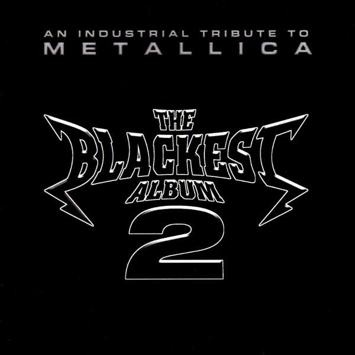

CD
The Blackest Album 2 - An Industrial Tribute To Metallica
Various
Media: VG+ · Sleeve: VG+
—
Personal
Discogs SuggestedCA$23.58
Discogs MedianCA$23.58
Discogs HighCA$23.58
- Physical Copy ID
- BB-CD-3254
- Year
- 2000
- Label
- Cleopatra
- Catalog #
- CLP 0788-2
- Country
- USUS
- Genre / Style
- Electronic · EBM, Industrial, Synth-pop